My Journey of Building and Virtualizing an EPYC Home Server#
Building a virtualized home server from scratch is no easy task, at least to me it was rather challenging. It even took me 5 trips just to get all the parts in place even if I had done my research and planned for weeks ahead, and even more time to set it up. Overall I was able to get what I wanted, and here I want to share my experience of building a proper home server as a not-so-hardware-savvy guy and some of the troubleshooting I did along the way. Hopefully, if any first timer faces similar issues, they can find some clues here.
Backstory..#
For several years, I’ve maintained two well serving PCs: one as my workstation and another as my home server that hosts my experimental ML cluster and a bunch of other standalone containers. As time went by, I found both machines of consumer hardware struggling to keep up with my demands. I faced a rather awkward choice here: a. getting myself an additional daily-drive workstation and putting the existing ones as servers; or b. building a brand new server grade machine that can handle all my needs for now, and retire the rest. I went for the latter. Looking back, it was probably the better move. My room was already a mess of gadgets - PCs, laptops, many screens, and a bunch of network stuff. Adding a third machine could make the room even more cluttered. And I want the all the resources shared and managed in one place so that I can avoid the hassle of frequently moving and reconfiguring the existing deployments from one machine to another, since they have varying specifications. Plus I might have to live with the occasionally blue-screening on one of the machine, which I managed to ignore for over a year without any knowledge on what caused it. Let us just stop letting the past haunt us and move on.
I did not want to look in the consumer-grade hardware space when my primary interest is to host services; my requirements lean towards a high core count rather than individual core performance. I am not a heavy gamer, but I also wanted to boot up a few Windows VMs for my daily use compatibility. Until recently, my local dealer started selling “brand new” AMD EPYC processors in stock. I was intrigued. I ended up buying two EPYC processors from him and building a machine around them.
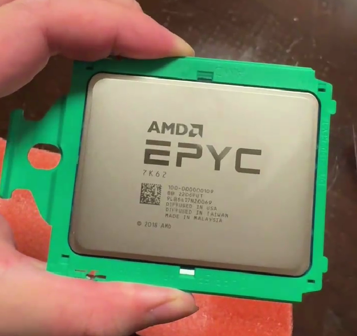{kind=link}
Hardware#
After some research, the prohibitively high cost of high core count CPUs with good per-core performance made it challenging for me to find an ideal combo. Most likely the new build will be just a dedicated homer server running at the back within few years when I need to get an more powerful PC. I just set the budget at $2.5K, which pretty much dictated what grade of the hardware I could get. It is also certain I needed to use older generation hardware or even used parts to get the most out of my budget.
part |
choice |
|---|---|
CPU |
AMD EPYC 7K62 x 2 |
Motherboard |
Supermicro H11DSi-NT |
CPU cooler |
Thermalright TR-TA120EX TRA4 |
RAM |
Used Samsung DDR4 3200MHz 2Rx4 with ECC 32G * 8 |
SSD |
Samsung 990 Pro 2T |
HDD |
Seagate Ironwolf Pro 8T |
GPU |
Used Nvidia RTX 3060 12GB |
Chassis |
Phanteks Enthoo Pro 2 |
CPU
Remember that AMD doesn’t really offer EPYC processors to individuals; these chips are primarily designed for and sold to enterprises and cloud service providers. When newer EPYC generations are released, older models may lose value quickly as enterprises focus on the latest technology. And there is something called total cost of ownership (TCO) that AMD has been pitching to data centers in recent years: the idea that the cost of the hardware is only a small part of the overall cost of utilizing these chips. Every few years, AMD releases better power-efficient chips, which can save money on electricity bills over time. This is why I can get the older generation CPUs for a decent price once data centers release them to the market. I ended up getting 2 7k62 CPUs, each offers 48 cores with 96 threads with a base clock speed of 2.6 GHz and support 128 PCIe lanes. I couldn’t find much information about this CPU beyond its basic specs. It’s likely a custom-made processor designed for specific clients. Even though the chips seem to have only appeared publicly in mid-2022, they’re based on the Zen 2 architecture (at least 2 more generations released after), which was first released about more than 5 years ago. Overall let us say the performance is all right for the price I paid.
Motherboard
For the motherboard, I have chosen the Supermicro H11DSi-NT. It was designed for the 7002 series. It offers 3 PCI-E 3.0 x8 slots and 2 PCI-E 3.0 x16 slots, though having GPUs installed would pretty much block 2 of the x8 slots. The motherboard also supports up to 2TB of DDR4 memory across 16 DIMM slots, and features SATA3 ports and a M.2 for storage expansion, and provides dual 10GBase-T LAN ports. Another nice feature is that the motherboard supports IPMI, which allows me to access the motherboard control remotely.
Memory
The motherboard supports up to 4TB Registered ECC DDR4 3200MHz RAM, and getting a total of 265GB of RAMs while maxing out speed seems reasonable enough for my needs. Though I made an mistake assuming there were only 8 sockets, in fact there are 16. I ended up having half of the slots empty, which I really shouldn’t (why you should fill all the ram slots). I will get another 8 sticks of RAM in the near future once it is tested out.
GPU
My mentality on this was to kick start with an okay but cheap card that allows me to do some 7B LLM inference and lightweight machine learning training. If I am not using the GPU for computing, I could use it for screen display. My focus is specifically on the Nvidia line. I ended up getting a used Nvidia RTX 3060 12GB for a much cheaper price than a new 4060. VRAM is the key here, I could finally run 7B models locally (7 billion parameters in int8 precision require roughly 9GB of VRAM) and do some fine-tuning on a model in the cloud and run the quantized version locally. For a detailed calculation of the requirements, I recommend checking out this blog by eleuther.
Power, Chassis & CPU Cooler
Regarding the chassis, I was initially drawn to standard 4U cases for a server rack, as they provide easier part replacement and future hardware expansion. However, I had several concerns. Firstly, my study room is particularly narrow, and a server rack could obstruct light and appear overwhelmingly large. Secondly, there’s a possibility of relocation, and server racks aren’t easily transportable. Lastly, and most importantly, I’ll be spending much time in that room, so quietness is very crucial. This was also why I was more inclined towards the EPYC series initially; EPYC seems to have better chiplet architecture that allows for better heat distribution and provides lower power consumption at idle, reducing the need for intense fan blowing. The airflow design of server cases tend to constrict airflow, often making obnoxious whistling sounds. After some research on server noise, I reached the conclusion that it was not plausible to further accommodate a stack of machines without making my study unbearable to work in, for both noise and heat issues. I ended up getting a tower case for this build instead, specifically a Phanteks Enthoo Pro 2, which supports the motherboard’s form factor of E-ATX. This case is big and well built, thick enough to insulate noises and allows fans to be installed all around for heat dissipation.
For CPU cooling, I picked 2 rather affordable air cooling TR-TA120EX TRA4 from Thermalright. My dealer tried to sell me some liquid coolers, but I doubt my usage will ever hike up the CPU usage all the time to the point where liquid cooling is necessary. I also don’t want to deal with the hassle of replacing the liquid every few years. For case ventalation, I picked up 8 TL-G12 fans from Thermalright (For those wishing to get even quieter fans, Noctua has better but more expensive options.) Overall, I am quite happy to keep the noise level reasonably low, almost unnoticeable from sitting 1 meter away.
I picked up a 1250W power supply from Great Wall, which should be reliable and powerful enough for dual CPUs and even future expansion.
Virtualization with Proxmox#
Next, I wanted to virtualize the machine for the reasons explained in the beginning. Proxmox is a complete open-source hypervisor for virtualization. I have set up my old server with Proxmox for a while already, it has a large community and detailed documentation, which can be very helpful for troubleshooting and learning. It is the go to choice for setting up a home server.
Updating BIOS#
For my motherboard, some of the supports require board revision 2.x. I updated the BIOS from the IPMI web interface before installing Proxmox.
Guide to Installation#
To install Proxmox, the first step is to bake a Proxmox ISO image. Go to the proxmox download and download the latest installer. I used USBIMager to create the bootable USB drive. Next you need to reboot the machine and go to the BIOS of the machine and set the boot device to boot from the USB drive. You should then see the graphical interface of the Proxmox installer. Follow the on-screen instructions to install Proxmox. For in the network configuration, I recommend setting up a static IP address for the machine. I have my local network configured and have reserved a static IP range. You should do it before configuring your Proxmox management network, otherwise you might experience IP conflicts and won’t be able to access it later. Once the installation is finished, you could reset your boot order and remove the USB drive in the next reboot. You should be able to access the Proxmox web interface by typing the IP address you set up at port 8006 in the browser on a different PC. You could also access the command interface if you manage to connect a display to the motherboard VGA port. The default username is “root” and the password is the one you set up during the installation. If you can log in and see something similar as following, that means you installed Proxmox successfully.
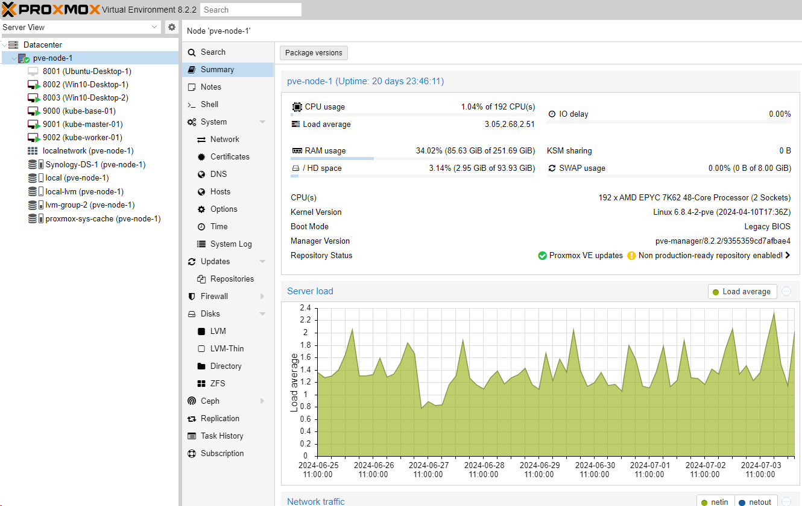{kind=link}
From the left navigation panel on the web interface, you have all the available creations arranged in specific view. For example, in the snapshot above, arranged in ‘Server View’, I have a server named pve-node-1 which is just the machine I built listed under Datacenter. Once you click on it, the right panel will show the details of the server and the available configurations. You can also access the command line interface if you click on ‘_Shell’. Under each server, there is a list of VMs I created and also other creations such as storage. Clicking on any of them will also show you the configuration panel respective to the type of the creation.
Setting up a Windows VM#
There may be some other post-installation configurations specific to your needs, which will not be covered here. But we can go through a simple Windows VM creation. You need to first create an ISO image storage in Proxmox and upload a Windows 10 ISO image to the storage. I have a directory storage type for storing all the ISO images. In addition, you also need another driver image called Windows VirtIO Drivers, which enables direct access to devices and peripherals for virtual machines using them.
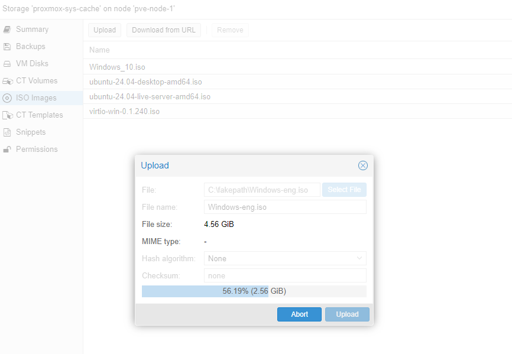{kind=link}
Once both ISO images are uploaded, you can click on the Create VM VM button in the upper right to create a VM. I will be installing a Windows VM called windows-sm-1 with the VM ID 8004 in the node pve-node-1, which is the machine I built.
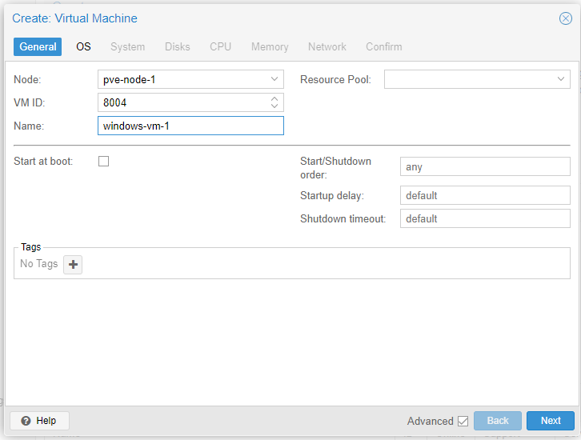{kind=link}
Next, you will be taken to the OS page where you will specify the Windows images. In my case, I have uploaded a Windows 10 image and a Windows VirtIO drivers image to proxmox-sys-cache, so I will be selecting them from there. From Proxmox 8, you will be able to directly add the VirtIO drivers image on this page. If you are using an older version of Proxmox, you may ignore this step and add the VirtIO drivers later after configuring the VM. Simply go to the Hardware tab after selecting your VM, and press Add CD/DVD drive.
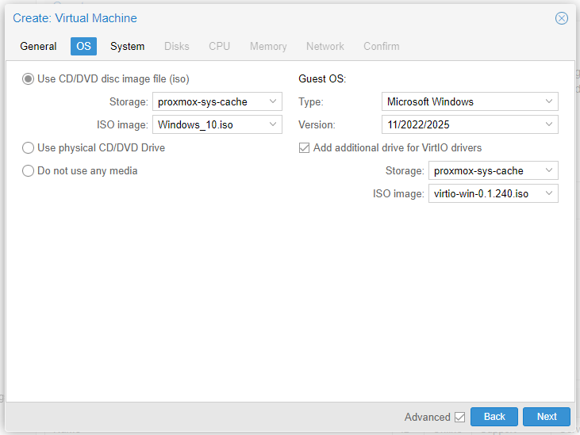{kind=link}
In the next tab, you will be providing firmware emulation choices. For the machine selection, which is to select a hardware layout of the VM’s virtual motherboard, I would generally go with q35 as it provides a virtual PCIe bus which is good for passing through PCIe hardware, while i440fx may be necessary for older operating systems or specific software that requires legacy hardware. Under BIOS, as I am planning to use UEFI and PCIe passthrough, I will select OVMF for BIOS. As for EFI disk, I will assign an LVM storage. If you are using Windows 11, you may have to use OVMF as it requires UEFI. I will also enable the QEMU agent.
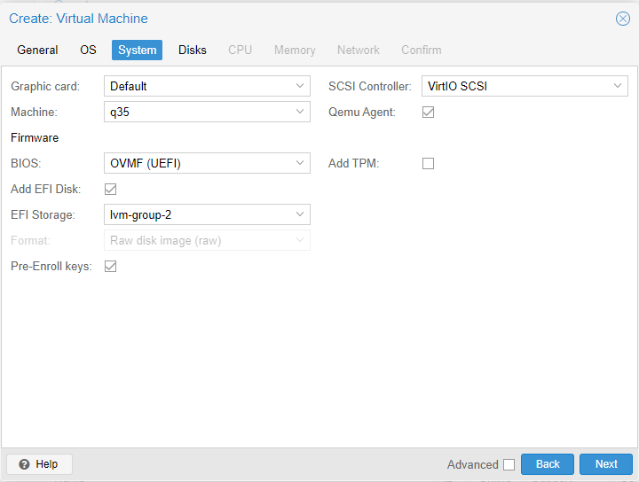{kind=link}
You can set up the virtual hard drive in the Disks tab. A virtual SCSI drive is preferred for its speed. I will allocate only 128GB of storage from the LVM I created earlier to the VM as this is just a demo.
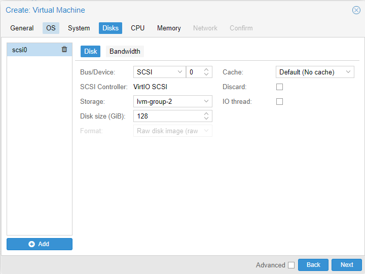{kind=link}
In the next two tabs, you will be providing the maximum CPUs and memory to the VM. I will choose 4 cores and 8GB memory for now. Follow the rest of the steps to configure the VM. Once completed, you should have a new VM shown on the left panel. Simply select it and click start in the upper right and go to the _Console tab to start the installation process. You might encounter a failed to start Boot0002 failed to start Boot0002 “UEFI QEMU DVD-ROOM QM00001 from PciRoot (0x0) …. Time Out” error error like I did; you simply need to press ANY KEY to boot from the virtual driver disk when starting the VM. Then you should have the Windows Installer ready. Follow the prompts and complete the installation.
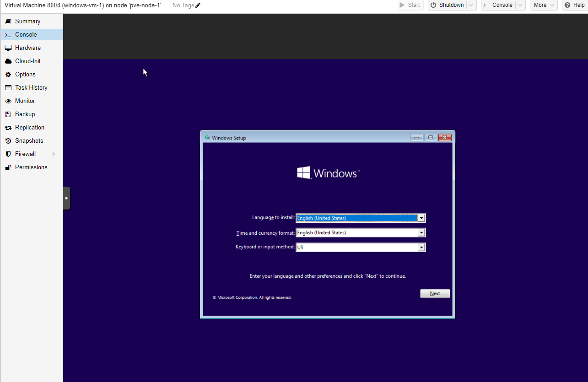{kind=link}
You may experience a We couldn’t find any drives issue during the installation process. On the same page, click Load driver, and rescan the VirtIO drivers disk to install the necessary driver.
Once the installation and setup are completed, you still need to install a few more things to get Windows running properly. Go to Device Manager; under the Other devices section, there are a few devices that need to update their drivers. Right-click and select Update Driver, and point to the VirtIO drivers disk. It should automatically locate the driver for you. Repeat the process for every device that needs a driver update in the Other devices section.
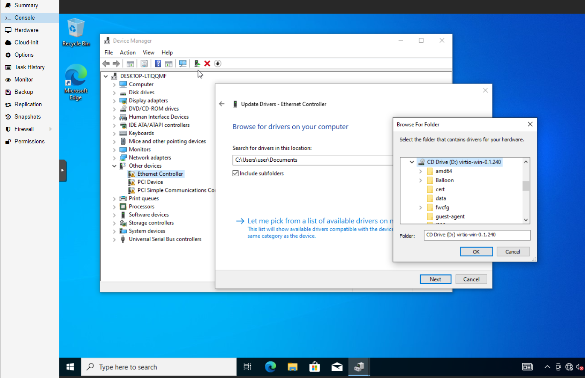{kind=link}
There is one more important thing, which is to install the QEMU agent. There is a QEMU installer located in the VirtIO drivers disk. You can find it in the guest-agent folder. Once the installation is finished, you can further verify by checking if there are IPs listed on the VM’s status page from the Proxmox console. If the guest agent has not been installed properly, the IPs value will appear as Guest Agent not running.
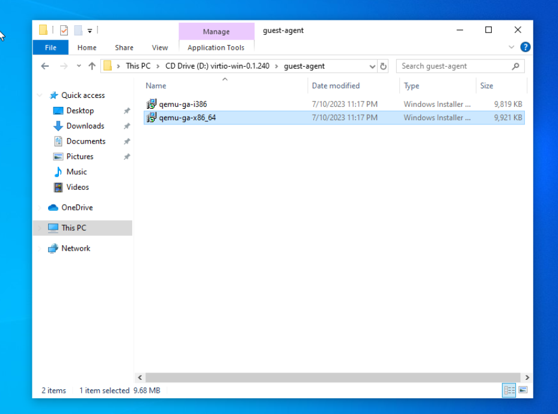{kind=link}
Of course, hardly anyone wishes to access their Windows system on a web browser. For anyone with a Windows Pro license, you can enable remote desktop and access it from another client machine in the same local network.
GPU Passthrough#
There are two options for using a GPU in a Virtual Machine: passthrough and vGPU. vGPU allows multiple VMs to share a single GPU, but currently only higher-grade GPUs support this, and it does not allow outputting video to external monitors. Passthrough, on the other hand, is easier to set up and less risky, but the VM has full control over the physical GPU. As vGPU is not really available for my GPU, I will walk through my setup of NVIDIA GPU passthrough.
As graphics cards communicate with the motherboard through PCIe, you need to ensure the hardware meets the PCI passthrough requirements: 1. Your motherboard needs to support IOMMU. 2. Your CPU has to support hardware virtualization and IOMMU. Then you need to enable virtualization and IOMMU in BIOS/UEFI settings.
On the Proxmox web interface, go to Data Center, click Resource Mappings, and press Add. You can create a PCI Mapping here for your VMs. Find the IOMMU group (second column) where your graphics card device belongs, and select all the devices in the same group. It is generally not recommended to split them up as it may cause crashes. I have also installed another PCIe USB 3.1 controller, but it seems to belong to the same IOMMU group as other devices. I tried passing through only the controller, but it crashed the entire Proxmox system, and I had to boot Proxmox in safe mode to remove the mapping using commands.
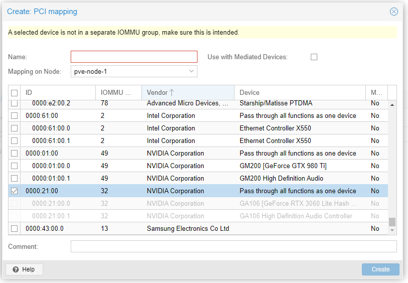{kind=link}
Next, you can add the GPU to the VM. Go to VM’s hardware setting, press add PCI device, find and add the mapped device.
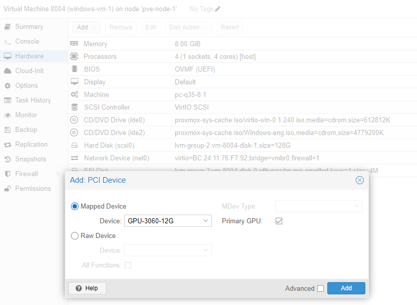{kind=link}
You should reboot the VM to take effect. In the VM, you should also install or update the GPU driver from the device management. But if you successfully see the device in the display adapter, it means you have set up successfully.